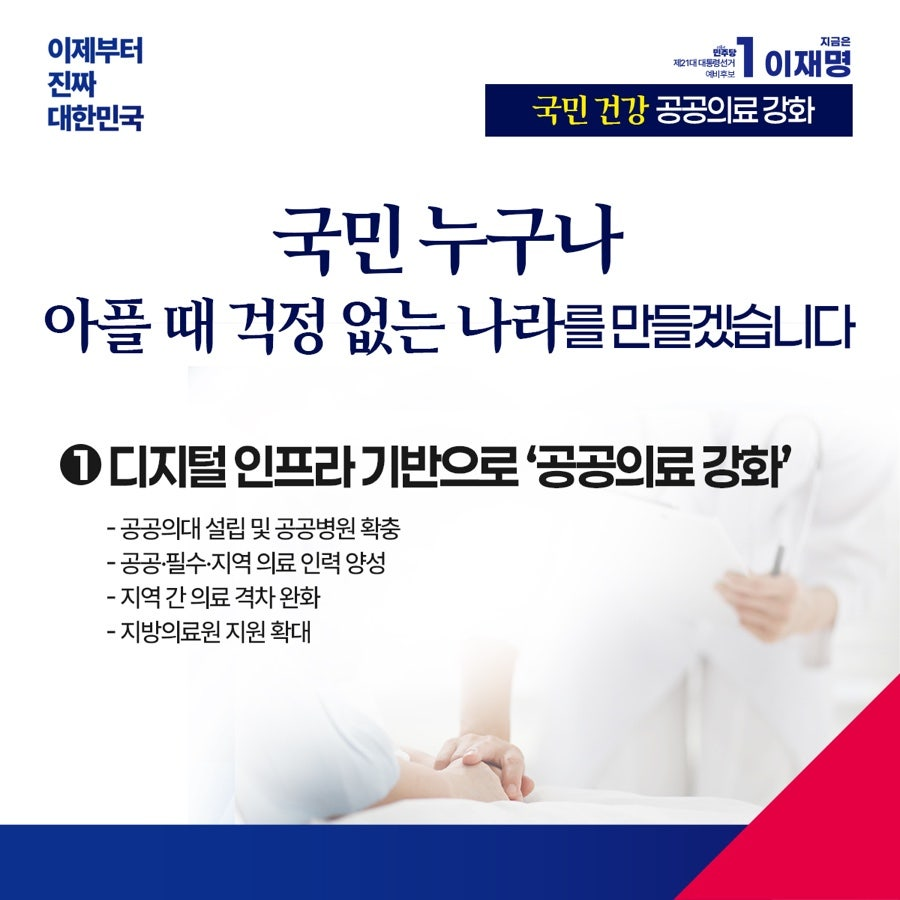
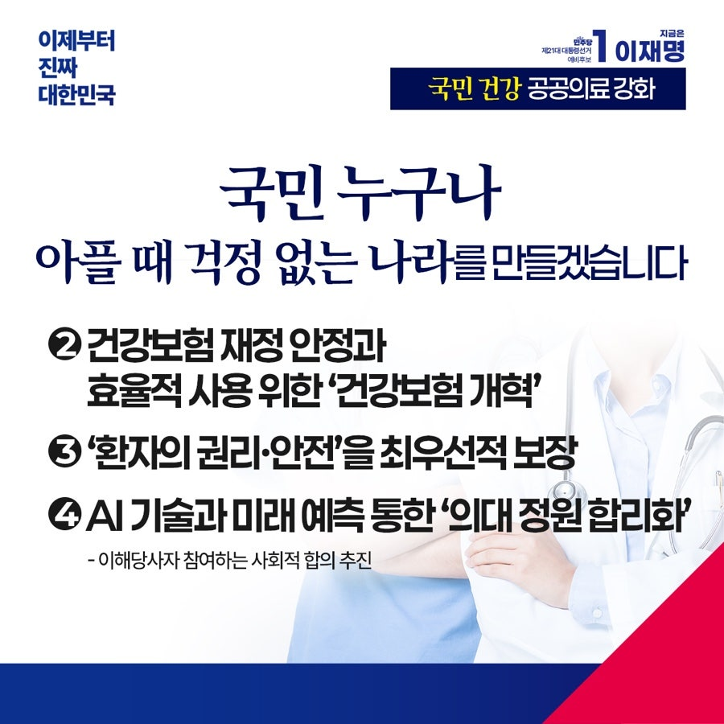
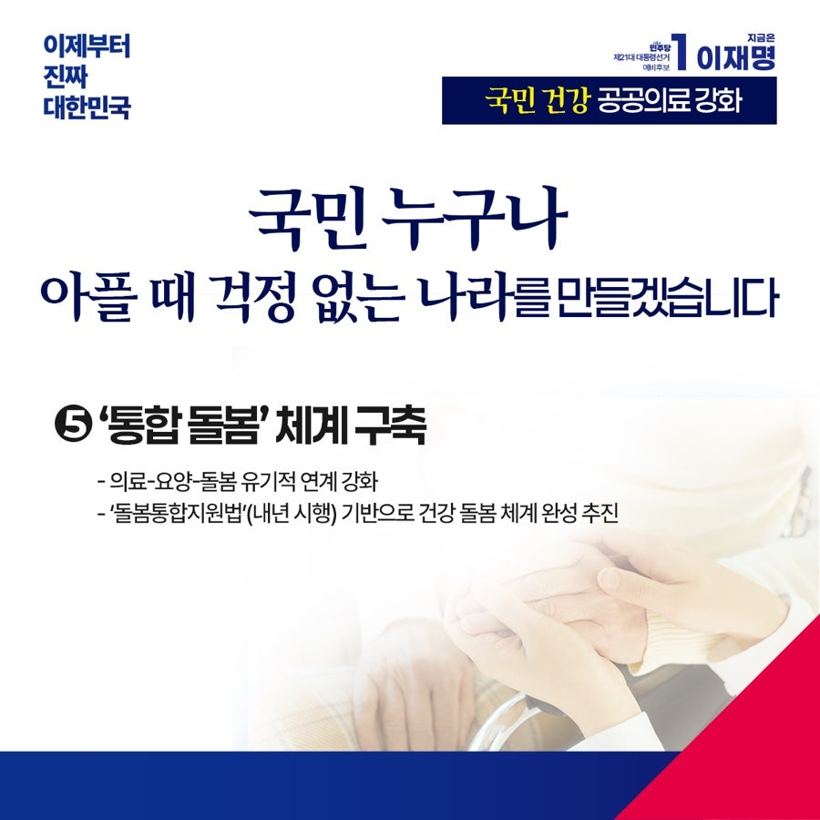

← 메인으로 돌아가기
이재명 대통령후보 정책모음
[복지:공공의료]
카카오톡으로 공유하기



아플 때 국민 누구도 걱정 없는 나라, 제대로 치료받을 수 있는 사회를 만들겠습니다
우리나라는 비교적 짧은 기간 내에 건강보험 보장성을 크게 향상시켰고, 수준 높은 의료서비스 체계를 구축했습니다. 그 중심에는 밤낮없이 현장을 지켜온 의료인의 헌신이 있었습니다.
하지만 여전히 '거주 지역'과 '민간보험 가입 여부'에 따라 의료서비스의 격차가 존재합니다. 아파도 갈 병원이 주변에 없고, 병원 문턱은 점점 더 높아지고 있습니다. 의료접근성이 실질적인 환자의 필요보다 지역 여건, 소득 수준, 의료기관 분포에 더 크게 좌우되고 있기 때문입니다.
이제 "아프면 병원으로"라는 당연한 상식이 제대로 통용되어야 합니다. 환자의 필요와 안전을 최우선으로 하는 의료개혁, 요양과 돌봄까지 이어지는 포괄적 개편이 필요합니다.
공공의료를 강화하겠습니다.
공공의대를 설립해 공공·필수·지역 의료 인력을 양성하고, 디지털 인프라를 기반으로 한 차세대 공공의료시스템을 갖춘 공공병원을 확충해 가겠습니다. 지역 간 의료 격차를 줄이고, 지방의료원에 대한 지원을 확대해 공공의료 거점기관으로 육성하겠습니다. 응급·분만·외상치료 등 필수 의료는 국가가 책임지겠습니다.
건강보험 재정 안정과 효율적 사용을 위해 건강보험제도를 개혁하고, 환자의 권리와 안전을 최우선으로 보장할 수 있도록 의료 시스템을 강화하겠습니다.
의대 정원을 합리화하겠습니다.
지난 의료 대란은 모두에게 고통을 남겼습니다. 정부의 일방적 결정에 의료계는 대화의 문을 닫았고 결국 국민이 가장 큰 피해를 입었습니다. 진료를 제대로 받지 못한 환자들은 생사를 넘나들어야 했고, 전공의와 의대생들은 병동과 학교를 떠났습니다.
이제 갈등과 대립, 정쟁을 끝내야 합니다. 국민의 생명과 건강을 중심으로, 모두가 머리를 맞대야 합니다. 모든 이해당사자가 참여하는 사회적 합의에서 다시 출발해 AI와 첨단 과학기술 발달에 따른 시대 변화까지 고려해야 합니다.
통합돌봄 체계를 구축하겠습니다.
의료-요양-돌봄이 유기적으로 이어지는 시스템을 구축하겠습니다. 내년에 시행되는 「돌봄통합지원법」을 기반으로 지속 가능한 지역사회 건강돌봄체계를 완성하겠습니다. 누구도 돌봄에서 소외되지 않는 사회를 만들어 내겠습니다.
국민의 생명보다 더 소중한 가치는 없습니다. 아프면 언제, 어디서나, 누구라도 차별 없이 치료받는 나라, ‘진짜 대한민국’이 되어야 합니다.
공공의료 확충! 의료불평등 완화!
이제부터 진짜 대한민국, 지금은 이재명입니다.